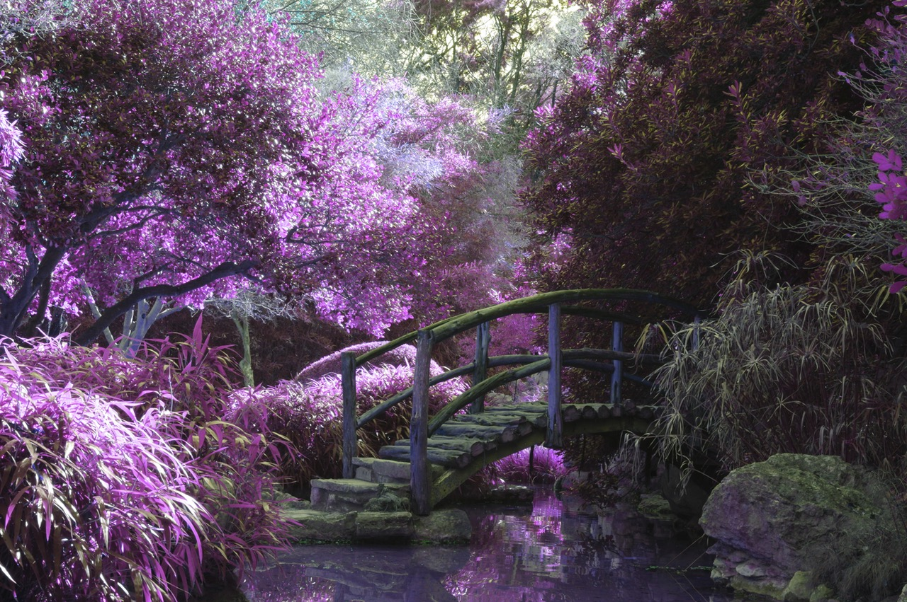
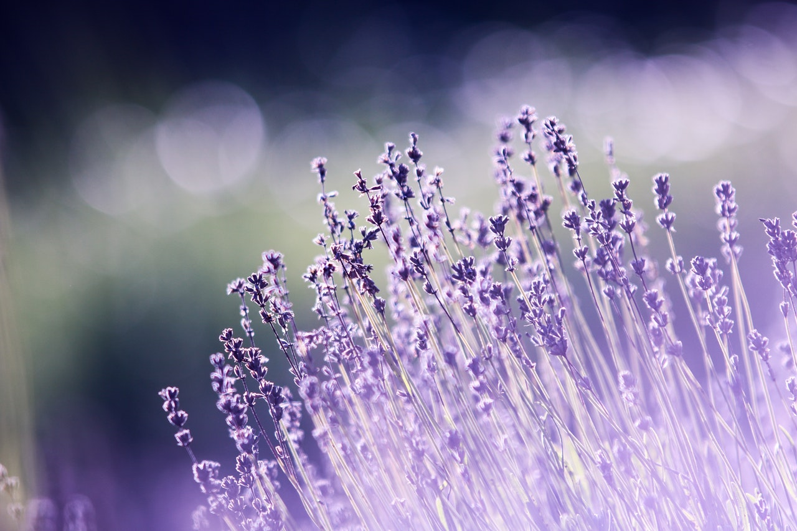

All About Gardens
A garden is a planned space, usually outdoors, set aside for the display, cultivation, and enjoyment of plants and other forms of nature. The garden can incorporate both natural and man-made materials. The most common form today is known as a residential garden, but the term garden has traditionally been a more general one. Zoos, which display wild animals in simulated natural habitats, were formerly called zoological gardens.[1][2] Western gardens are almost universally based on plants, with garden often signifying a shortened form of botanical garden.
Some traditional types of eastern gardens, such as Zen gardens, use plants sparsely or not at all. Xeriscape gardens use local native plants that do not require irrigation or extensive use of other resources while still providing the benefits of a garden environment. Gardens may exhibit structural enhancements, sometimes called follies, including water features such as fountains, ponds (with or without fish), waterfalls or creeks, dry creek beds, statuary, arbors, trellises and more.
Some gardens are for ornamental purposes only, while some gardens also produce food crops, sometimes in separate areas, or sometimes intermixed with the ornamental plants. Food-producing gardens are distinguished from farms by their smaller scale, more labor-intensive methods, and their purpose (enjoyment of a hobby rather than produce for sale). Flower gardens combine plants of different heights, colors, textures, and fragrances to create interest and delight the senses.
Gardening is the activity of growing and maintaining the garden. This work is done by an amateur or professional gardener. A gardener might also work in a non-garden setting, such as a park, a roadside embankment, or other public space. Landscape architecture is a related professional activity with landscape architects tending to specialise in design for public and corporate clients.
Source : Wikipedia Garden
 